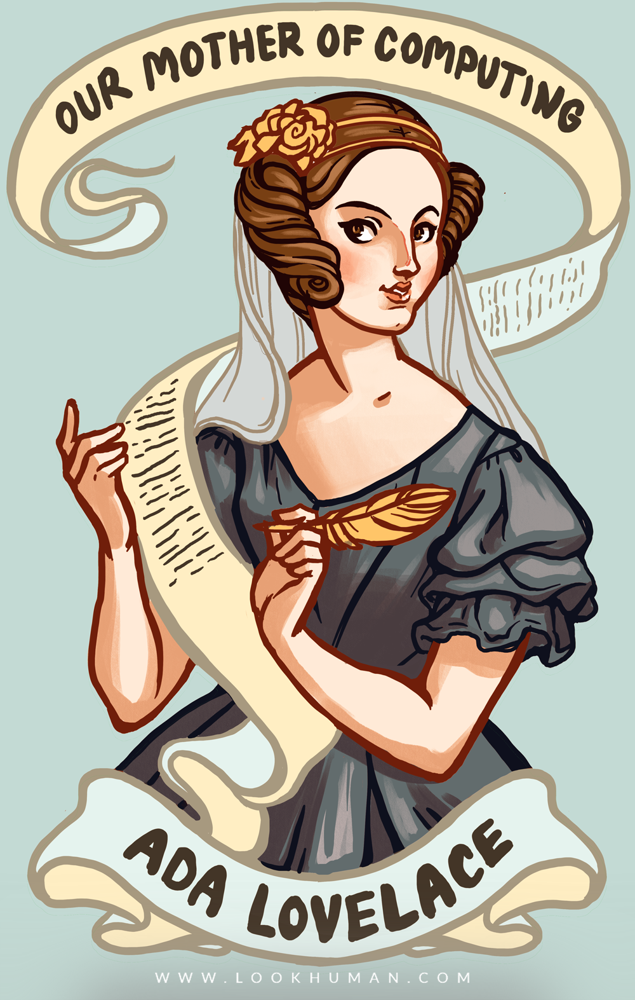

Life Events:
- Born Ada Bryon to a poet,Lord Bryon and his short lived romance with Anne Isabelle Milbanke
- Her parents seperated shortly after her birth and her mother was given sole custody of Ada --->This would lead to her mathmetical education because her mother did not want her to act like her poetical father
- Married to William King who would later inherit the title of Earl Lovelace, making her Countess Lovelace
- She mothered three children
- Died of cancer at the age of 37
Education: University of London

Even to today Ada Lovelace continues to impact the lives of many people, inspiring them. They even go through the efforts of making their own doodles of her.
This image is especially important because it expresses how people view her in the modern day.
She is seen as the mother of computing because of how she believed technology could advance.
Ada Lovelace was a high class woman, while that may seem like an advantage because of her ability to gain an education through private tutors, it actually caused her a lot of hardship.
While her mother actively sought out higher education in mathmatics and science for her daughter, her experience away from home was not quite the same.
When Ada moved to London she was faced with adversity from the men who did not encourage noblewomen engaging in their intellectual scientific pursuits.
In the modern day she is now regarded as a symbol of modern day feminism. People use her name to promote events that encourage other females to join the STEM field and
celebrate the achievements of other women in STEM fields. The fact that people in this world, in this day come together to celebrate her achievements is amazing.
Her legacy empowers women everywhere and encourages them to network with one another in this male dominated field.
Significance to Computer Science:
Theorized a method for an engine to repeat a series of instructions which became known as looping. Also anticipated future developments such as computer generated music and graphics
While working under Babbage she suggested writing a plan on how the machine could be used to calculate numbers. This led to what is now
regarded as the first computer program. Which is why a software language written by the US Department of Defense is named Ada in her honor.
Experiences:
At the age of 17 Ada Lovelace met Mary Somerville, an amazing women who worked as a translator for works featured in Cambridge. She encouraged Ada to put her technological and mathmatical studies
into a more human context.
Around the age of 19 in 1834, through her acquintance Mrs.Somerville,Lovelace became acquinted with Charles Babbage's ideas on the Analytical Engine.
Due to this, Lovelace met and befriended Charles Babbage, a mathematician and inventor. Her friendship with Babbage would be what allowed her to publicly voice
her opinions and thoughts on the future of technology and what would later be known as "science".
Ada was tasked to translate an article on Babbage's invention, the analytical machine. Not only did she translate the article, encouraged to do so by Babbage, she added her own notes on the machine as well.
Her notes were three times longer than the original article!
In the notes, she described how codes could be created to handle letters, numbers, and symbols.
Works Cited
Ada Byron, Lady Lovelace. N.p., n.d. Web. 30 May 2017. .
"ADA LOVELACE DAY – A celebration of the achievements of women in science, technology, engineering and maths (STEM)." ADA LOVELACE DAY. N.p., 13 Sept. 2016. Web. 01 June 2017. .
Ada Lovelace: Founder of Scientific Computing. N.p., n.d. Web. 30 May 2017. .
Cs.yale.edu. N.p., n.d. Web. 30 May 2017. .
"File:Ada Lovelace portrait.jpg." Wikipedia. Wikimedia Foundation, 09 May 2017. Web. 01 June 2017. .
Image of ada king, countess of lovelace, 1840. by Science & Society Picture Library. Science & Society , n.d. Web. 31 May 2017.
Sterle, Lisa. "ada lovelace shits coffee mugs canvases" LISA STERLE. N.p., 23 Feb. 2015. Web. 31 May 2017. .